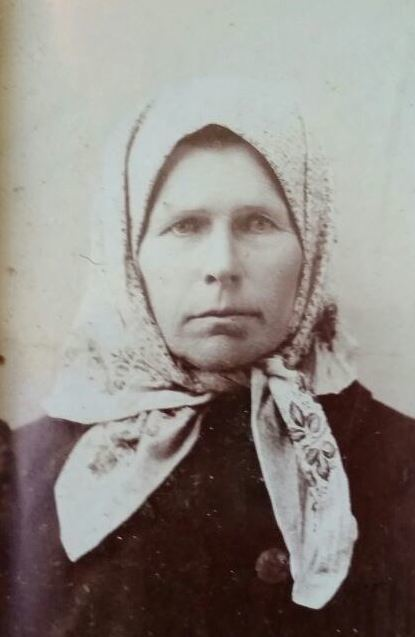
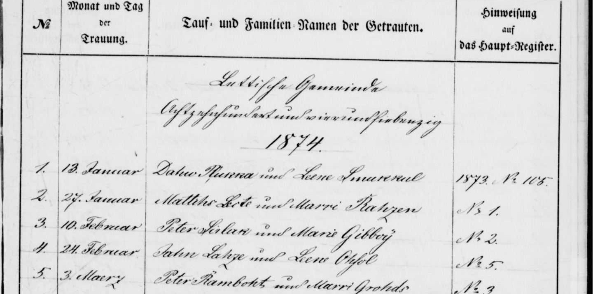

Marija Gibboja 1853–1925
Peter's great-great-grandmother.
Also recorded as Marie / Mari Gibboy; Marija Sirlaka; Marija Ģibojs; Gibboy (p. 7); Giboy (pp. 7, 12); Giboji (p. 7); Marija Ģibols (married name Sirlaks).
Marija Gibboja was born on 18 Aug 1853 in Kalna-Podis farm, Priekuļi, Cēsis district, Vidzeme, Latvia3,4,5,6,7, the daughter of Mārcis Gibboy and Anna Mežciema6,8. She married Pēteris Sirlaks on 22 Feb 1874 in Rauna, Cēsis district, Vidzeme, Latvia20,21,22. She died on 1 Nov 1925 in Vīstuči farm, Jaunrauna, Rauna, Cēsis district, Vidzeme, Latvia5,12,13 and was buried at Jaunrauna cemetery, Jaunrauna, Rauna, Cēsis district, Vidzeme, Latvia14,15,16.
Family
- Parents
- Mārcis Gibboy b. 1807 and Anna Mežciema b. 1819 documented
- Husband
- Pēteris Sirlaks 1847–1896 · married on 22 Feb 1874 in Rauna, Cēsis district, Vidzeme, Latvia20,21,22
- Children
- Mārtiņš Vilhelms Sirlaks 1883–1942 documented
- Natālija Emīlija Sirlaka 1875–1887 documented
- Dāvis Sirlaks 1886–1952 documented
- Anna Sirlaka 1890–1963 documented
- Ernestīne Sirlaka b. 1879 documented
- Kārlis Sirlaks 1881–1957 documented
- Kristīne Sirlaka b. 1888 documented
- Augusts Sirlaks b. 1895 documented
Life events
| Event | Date | Place and details |
|---|---|---|
| Born | 18 Aug 1853 | Kalna-Podis farm, Priekuļi, Cēsis district, Vidzeme, Latvia Old Style (Julian) date: 6 Aug 18533,4,5,6,7 |
| Lived | 5 Dec 1857 | Rauguļi farm, Priekuļi, Cēsis district, Vidzeme, Latvia Old Style (Julian) date: 23 Nov 18578 |
| Note | 1871 | St John's church, Cēsis, Cēsis district, Vidzeme, Latvia confirmation (iesvētīšana) at Cēsis, 1871, aged c. 17–18.4 |
| Note | bet 1872 and 1873 | She was 19 when Pēteris courted her (so c. 1872–73); tall, blue-eyed, "Liv"; raised the seven surviving children alone; a portrait shows her with her four sons.17 |
| Married | 22 Feb 1874 | with Pēteris Sirlaks Rauna, Cēsis district, Vidzeme, Latvia Old Style (Julian) date: 10 Feb 187420,21,22 |
| Note | Mar 1890 | Vīstuči farm, Jaunrauna, Rauna, Cēsis district, Vidzeme, Latvia Mother of Anna Sirlaka (b. 1890), as 'Mari geb. Gibboy', wife of farmer Peter Sirlak. Her own birth (tree: 1853) and death (tree: 1920) are still unsourced.18 |
| Died | 1920 | According to the family's 2015 tree11 |
| Died | 1 Nov 1925 | Vīstuči farm, Jaunrauna, Rauna, Cēsis district, Vidzeme, Latvia Preferred version: Voronins's tree gives a full date (1 Nov 1925, Vīstuči); Timenote also has 1925, and Aina's memoir (an eyewitness, aged 5) has a November night in 1925, aged 72. The 2015 tree's 1920 has no known source. Only the 1925 civil death register would fix the day.5,12,13 |
| Buried | Nov 1925 | Jaunrauna cemetery, Jaunrauna, Rauna, Cēsis district, Vidzeme, Latvia14,15,16 |
| Lived | Vīstuči farm, Jaunrauna, Rauna, Cēsis district, Vidzeme, Latvia9,10 | |
| Note | Kin of the Gibboy family: the Augškāps family and the Bite (Bitte) family at the Rauņi inn (Rauņu krogs).19 |
Possible records (not confirmed)
Records that may concern her, but don't settle it: an initial and a surname only, a family recollection, or a reading that needs a second look. Each links to the record.
- Other 1876 St John’s church (Sv. Jāņa baznīca), Cēsis: Family tradition that the name Giboji/Giboy was inscribed among donors’ names on the old "Livonian bell" in the tower of St John’s, Cēsis ("viņas vārds Giboy tika Cēsu Sv. Jāņa baznīcas tornī līvu zvanā ierakstīts", p. 7). Probably a Gibboy family donation (her father?).23 Unverified tradition; the bell inscription can be checked.
- Other: Family tradition that she was "Livonian" (līvu/lībiete). May mean Liv ancestry or simply "Vidzeme". Her age 19 at the courtship (c. 1872–73) fits b. 1853.23 Romanticised family tradition.
- Other: LEAD (M): Exact day of death, November 1925 (Voroņins tree/Timenote: 1 Nov 1925).23 Would be settled by: Rauna/Jaunrauna civil death register 1925 (LVVA) or Rauna church book.
- Other: LEAD (M): The "Giboji" name added in 1876 to the old bell of St John’s, Cēsis: may identify a Gibboy donor (her father Mārcis Gibboy?).23 Would be settled by: Bell inscription or literature on the St John’s bells (recast/lost?).
- Other: LEAD (M): Gibboy kin: the Augškāps family and the Bitte family of the Rauņi inn. Ties to Marie Bitte (Marija’s godmother, 1853) and Dahw Bitte (Dāvis’s godfather, 1886).23 Would be settled by: Rauna and Cēsis rural registers/revisions for Bitte at Rauņu krogs; Gibboy marriages.
- Other: LEAD (W): Portrait of Marija with her four sons; the 1930 wedding photo of Emīlis; Ernestīne’s wedding photo (lost).23 Would be settled by: Ask Jānis Sirlaks / Raimonds Voroņins.
- Other: LEAD (W): Lead kristine-gibboy (Kristīne Karnīte née Gibboy, Mārtiņš’s godmother 1883, Marija’s sister?): the memoir says nothing about Marija’s siblings or parents; its only Gibboy-side kin are the Augškāpi and the Bites of the Rauņi inn (p. 4).23 Would be settled by: Cēsis rural baptisms c. 1850–60 for children of Mārcis Gibboy and Anne.
- Other: LEAD (M): Marija Gibboy's confirmation, Cēsis 1871. Would confirm her parents and residence before marriage.23 Would be settled by: Raduraksti: Cēsis (Wenden) rural confirmation lists 1871. (Lead from the alternate draft, research/aina-memoir/alt/.)
- Other: LEAD (M): Photographs: Marija with her four sons; Dāvis's family at Emīlis's wedding (1930); Ernestīne's wedding photo (lost); the parents' youth photos enlarged by Valdis; Alma's Swiss album (with Ilga's family). Faces and dates for the Sirlaks generations. Adds to the photographs lead: the parents’ youth photos enlarged by Valdis and Alma’s Swiss album.23 Would be settled by: Ask Raimonds Voroņins / Jānis Sirlaks (living relatives; via Peter). (Lead from the alternate draft, research/aina-memoir/alt/.)
Photographs


Records



Open questions
- Kristīne Gibboy (b. c. 1855), Marija's sister, and Kristīne Karnīte née Gibboy (godmother 1883, mother 1888) Probably
- Marija Gibboja's death: 1920 (2015 tree) vs 1925 (Voronins tree, Timenote) Probably
- Marija Ģibols's parents Mārcis and Anne: Mārcis b. c. 1807 × Anna b. c. 1819 (the 1857 revision), not Raimonds's Mārcis b. 1816 × Anna Balodis Confirmed
Sources
- Ainas Sirlakas atmiņas ("Vīstuči"), Aina Jurciņa née Sirlaka, Priekuļi, 1998, p. 12, section "PĒDĒJĀ DIENA VIRSZEMĒ".
vecās lībietes Marijas Sirlakas dzim. Giboy
Translation: the old Liv woman Marija Sirlaka née Giboy
Spellings of her maiden name in the memoir: Gibboy, Giboy, Giboji. Church books: Gibboy, Gibboij. Our file name uses "Gibboja".
- MyHeritage family tree 'Dzimta' of Peter's third cousin (his family site), member GEDCOM export of 26 Oct 2026, I19 (person-6000019), GEDCOM lines 840–898.
NAME Marija /Ģibols/ · _MARNM Sirlaks
- Peter's tree, danenberg.sql, 2007–2015, personae 8, birth.
- Ainas Sirlakas atmiņas ("Vīstuči"), Aina Jurciņa née Sirlaka, Priekuļi, 1998, p. 7, section "PĒTERA MĀRČA DĒLA ĢIMENE".
Marija Sirlaka dzim. Gibboy, 1853.6.VIII-1925.XI, iesvētīta Cēsīs 1871.
Translation: Marija Sirlaka née Gibboy, 6 August 1853 – November 1925, confirmed at Cēsis 1871.
= 18 August 1853 Gregorian. As printed in the memoir; a 19th-century church-book date, so almost certainly Julian (Old Style).
- Raimonds Voronins, family tree shared on FamilyTreeDNA (Sirlaks / Gibboy lines).
Born 6 Aug 1853, Priekuļi ('K. Pohdin'); died 1 Nov 1925, Vīstuči, Jaunrauna. CONFLICT: our 2015 tree has death 1920.
- Cēsis rural congregation births 1853, no. 149, LVVA f. 235, apr. 4, l. 586, image 13 (right page, folio 10), LVVA f. 235, apr. 4, l. 586, image 13.
[August] — sechsten Morg. 8 Uhr | — sechzehnten | 149. Freudenberg K. Pohdis. Marie Gibboij. Lett. Kn. Mahrzis Gibboij u. s. W. Anne, luth. T. Lej Pohdis Jehkabs Pohdis u. s. W. Lihse, K. Pohdis Marie Bitte.
Translation: Born [August] the sixth, 8 a.m.; baptised the sixteenth. No. 149. Freudenberg, Upper Pohdis farm. Marie Gibboy. [Parents:] Latvian farmhand Mārcis Gibboy and his wife Anne, Lutheran. Godparents: from Lower Pohdis, Jēkabs Pohdis and his wife Līze; from Upper Pohdis, Marie Bitte.
Born 6 Aug 1853 Julian (= 18 Aug 1853 Gregorian) at 8 a.m.; baptised 16 Aug 1853. Daughter of Latvian farmhand (Kn. = Knecht) Mahrzis (Mārcis) Gibboy and his wife Anne, Lutherans (mother by given name only, as usual in 1853). Godparents: Jehkabs Pohdis and his wife Lihse of Lejas-Pohdis, and Marie Bitte[?] of Kalna-Pohdis. The 71st legitimate girl of the year. The same volume shows a farm named 'Gibboy' on Freudenberg (marriages 1853 no. 21), the likely origin of the surname, and the death of an unmarried maidservant Masche Gibboy, aged 58⅔, at Freudenberg Lejas-Dauksche (deaths 1853 no. 154). Kristīne Gibboy, Marie's probable sister and godmother of Mārtiņš Sirlaks in 1883, should be among later Freudenberg births (Cēsis rural Dz 1847–1879, LVVA 235/7/104).
- MyHeritage family tree 'Dzimta' of Peter's third cousin (his family site), member GEDCOM export of 26 Oct 2026, I19 (person-6000019), GEDCOM lines 840–898.
BIRT · 6 AUG 1853 · Priekuļi, K. Pohdin
Date: Julian (Old Style), as in the church books: = 18 Aug 1853 (Gregorian), as we have it. His note: Priekuļi births, https://www.raduraksti.arhivi.lv/objects/1:4:11:2055:2343:17226#&gid=1&pid=93, frame 93, entry 149 ('Marija piedzima Priekuļos'). His record match: BillionGraves, https://www.myheritage.lv/research/collection-10147/billiongraves?itemId=41171403&action=showRecord: 'Marija Sirlaka | Dzimšana: 1853 | Miršana: 1925 | Apglabāšana: Jaunraunas Kapi, Priekuļu Pagasts, Priekuļi Municipality, Latvia | Ieguldītājs: MyHeritage darbinieki un draugi | Radinieki: AttiecībasVārdsDzimšanaMiršanaPēteris Sirlaka18471935Dāvis Sirlaka18861952Alma Sirlaka18871953Jānis Sirlaka19161918Valdis Sirlaka19241935 | Vairāk fotogrāfijas:'.
- Priekuļi (Freudenberg) soul revision 1857, Rauguļi farm, family 10/58 (Marz Gibboi), LVVA f. 77, apr. 14, l. 344, image 16 (pp. 11v–12), LVVA f. 77, apr. 14, l. 344, image 16.
10. | 58. | Marz Gibboi | aus No. XIV. | 50. ‖ 10. | 58. | dessen Frau Anne | 38. / Töchter 1. Marri | 4. / 2. Christine | 2.
Translation: Family 10 (9th rev.) / 58 (10th rev.): Mārcis Gibboi, from farm no. XIV [at the last revision], now 50. His wife Anne, 38; daughters 1. Marija, 4; 2. Kristīne, 2.
1857 soul revision, family 10/58: Marz Gibboi, at the last revision 'aus No. XIV' (from the Luste farm), now 50; his wife Anne 38; daughters 1. Marri 4 and 2. Christine 2.
- Ainas Sirlakas atmiņas ("Vīstuči"), Aina Jurciņa née Sirlaka, Priekuļi, 1998, p. 9, section "PAR PĒTERA UN MARIJAS PIEKTO BĒRNU DĀVIDU".
Varbūt tādēļ atraitne Marija “Vīstučus” uzticēja savam apdāvinātākajam bērnam.
Translation: Perhaps that is why the widow Marija entrusted "Vīstuči" to her most gifted child.
Widowed 1896, she raised the seven surviving children alone (p. 7) and handed the farm to Dāvis; in the 1920s she lived in one downstairs room with Dāvis’s family (p. 11–12). A portrait showed her with her four sons (p. 11).
- My Life and Times (1912–1949), ¶13.
my father’s mother had driven to our house in a horse-drawn wagon from Raunas Vīstuči. She lived with on a farm with my father’s brother Dāvis
- Peter's tree, danenberg.sql, 2007–2015, personae 8, death.
- Ainas Sirlakas atmiņas ("Vīstuči"), Aina Jurciņa née Sirlaka, Priekuļi, 1998, p. 7, section "PĒTERA MĀRČA DĒLA ĢIMENE".
Marija Sirlaka dzim. Gibboy, 1853.6.VIII-1925.XI
Translation: Marija Sirlaka née Gibboy … died November 1925
Died on a November night at Vīstuči when Aina was 5 and Ilga 3 (p. 11: "Tajā novembra naktī … Viņai bija 3, man 5 gadiņi."), aged 72 (p. 12). Laid out in the granary above the cellar; buried (Jaunrauna) with the cemetery bell tolling. Refutes the 1920 death year of the 2015 tree; supports lead marija-gibboja-death-year (1925).
- MyHeritage family tree 'Dzimta' of Peter's third cousin (his family site), member GEDCOM export of 26 Oct 2026, I19 (person-6000019), GEDCOM lines 840–898.
DEAT · NOV 1925 · Vīstuči, Jaunrauna · AGE 72
His record match: BillionGraves, https://www.myheritage.lv/research/collection-10147/billiongraves?itemId=41171403&action=showRecord: 'Marija Sirlaka | Dzimšana: 1853 | Miršana: 1925 | Apglabāšana: Jaunraunas Kapi, Priekuļu Pagasts, Priekuļi Municipality, Latvia | Ieguldītājs: MyHeritage darbinieki un draugi | Radinieki: AttiecībasVārdsDzimšanaMiršanaPēteris Sirlaka18471935Dāvis Sirlaka18861952Alma Sirlaka18871953Jānis Sirlaka19161918Valdis Sirlaka19241935 | Vairāk fotogrāfijas:'.
- Ainas Sirlakas atmiņas ("Vīstuči"), Aina Jurciņa née Sirlaka, Priekuļi, 1998, p. 12.
Es sadzirdēju vecāsmammas bēru zvanu no kapsētas. … Izvadīja no klēts virs pagraba.
Translation: I heard grandmother's funeral bell from the cemetery. … The coffin was carried out from the granary above the cellar.
Funeral from the granary over the cellar at Vīstuči; Aina (aged 5) heard the funeral bell from the cemetery, presumably Jaunrauna cemetery, where Pēteris lies.
- S-sweep-sirlaks-frontier-https-cemety-lv-public-deceaseds-340475-type.
Marija Sirlaka Dzimšanas datums: 1853, Miršanas datums: 1925
Translation: Marija Sirlaka, born 1853, died 1925
cemety: born 1853, died 1925 (years only). The photo shows a red granite obelisk; its inscription is not legible in cemety's photo.
- MyHeritage family tree 'Dzimta' of Peter's third cousin (his family site), member GEDCOM export of 26 Oct 2026, I19 (person-6000019), GEDCOM lines 840–898.
BURI · Jaunraunas kapi, Latvija
His record match: BillionGraves, https://www.myheritage.lv/research/collection-10147/billiongraves?itemId=41171403&action=showRecord: 'Marija Sirlaka | Dzimšana: 1853 | Miršana: 1925 | Apglabāšana: Jaunraunas Kapi, Priekuļu Pagasts, Priekuļi Municipality, Latvia | Ieguldītājs: MyHeritage darbinieki un draugi | Radinieki: AttiecībasVārdsDzimšanaMiršanaPēteris Sirlaka18471935Dāvis Sirlaka18861952Alma Sirlaka18871953Jānis Sirlaka19161918Valdis Sirlaka19241935 | Vairāk fotogrāfijas:'.
- Ainas Sirlakas atmiņas ("Vīstuči"), Aina Jurciņa née Sirlaka, Priekuļi, 1998, p. 7, 10, 11.
Kad Sirlaku Pēteris noskatīja slaido līvu zilaci Mariju, viņai bija 19 gadi. … visus septiņus viņa viena izaudzināja … tajā portretā ar saviem četriem skaistajiem, staltajiem dēliem
Translation: When Pēteris Sirlaks chose the slender blue-eyed Liv Marija, she was 19. … she raised all seven alone … in that portrait with her four handsome, stately sons
She was 19 when Pēteris courted her (so c. 1872–73); tall, blue-eyed, "Liv"; raised the seven surviving children alone; a portrait shows her with her four sons.
- Raunas latviešu draudzes 1877.–1891. gada augusta dzimušo un kristīto reģistrs, 1890 no. 96, LVVA f. 235, apr. 7, l. 517, image 451, LVVA f. 235, apr. 7, l. 517, image 451.
Wth Peter Sirlak u. d. Fr. Mari geb. Gibboy
Translation: farmer Peter Sirlak and his wife Mari née Gibboy
Mother of Anna Sirlaka (b. 1890), as 'Mari geb. Gibboy', wife of farmer Peter Sirlak. Her own birth (tree: 1853) and death (tree: 1920) are still unsourced.
- Ainas Sirlakas atmiņas ("Vīstuči"), Aina Jurciņa née Sirlaka, Priekuļi, 1998, p. 4, section "PAR VĪSTUČU VĀRDU".
Dāvja mātes radi bija Augškāpi, Bites Rauņu krogā
Translation: Dāvis’s mother’s relatives were the Augškāpi [family of Augškāpi farm], the Bites at the Rauņi inn
Kin of the Gibboy family: the Augškāps family and the Bite (Bitte) family at the Rauņi inn (Rauņu krogs).
- Ainas Sirlakas atmiņas ("Vīstuči"), Aina Jurciņa née Sirlaka, Priekuļi, 1998, p. 7, section "PĒTERA MĀRČA DĒLA ĢIMENE".
iesvētīts 1874.10.II … Laulāti Raunas baznīcā
Translation: "confirmed" 10 February 1874 … Married in Rauna church
spouse: Marija Gibboy. The memoir prints 10.II.1874 as a confirmation ("iesvētīts") date, but it is exactly the marriage date in Rauna marriages 1874 no. 3 (10 Feb 1874 Jul. = 22 Feb Greg.); "iesvētīts" here = the church blessing of the marriage, or a slip.
- Raunas draudzes 1874. gada laulāto un mirušo reģistrs, 'Getraute im Jahre 1874', no. 3, LVVA f. 235, apr. 4, l. 2036, image 4 (p. 41), LVVA f. 235, apr. 4, l. 2036, image 4.
Getraute im Jahre 1874. … Lettische Gemeinde. Achtzehnhundert und vier und siebenzig 1874. … 3. | 10. Februar | Peter Sirlak und Marrie Gibboy | No. 2.
Translation: Married in the year 1874. … Latvian congregation … No. 3, 10 February: Peter Sirlak and Marrie Gibboy; main register no. 2.
Married 10 Feb 1874 (Julian; = 22 Feb Gregorian) to Marija ('Marrie') Gibboja. Rauna Latvian marriages 1874, no. 3 in the yearly summary list, which refers to 'Haupt-Register' no. 2. That main register, with ages and parents, was not located online. Also cited as Marija Gibboja's marriage.
- MyHeritage family tree 'Dzimta' of Peter's third cousin (his family site), member GEDCOM export of 26 Oct 2026, family F8 (I18 Pēteris Sirlaks × I19 Marija Gibboja).
MARR 1874.gada 10. Feb Rauna
read as Julian (Old Style), like his other church-book dates before 1918: = 22 Feb 1874 (Gregorian); he does not say which calendar
- Ainas Sirlakas atmiņas (1998 memoir, 53 pp. typescript), family papers (Raimonds Voroņins, 2026-10-24).